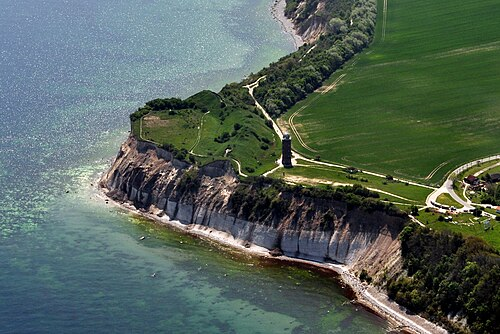
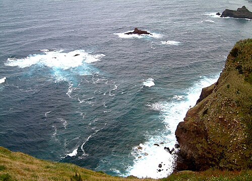

Das Meer
Unter Meer (Niederdeutsch: „die“ See) versteht man die miteinander verbundenen Gewässer der Erde, welche die Kontinente umgeben, auch „die Ozeane“. Wird diese marine Wassermasse als ein Gewässer verstanden, spricht man von „dem“ Weltmeer. Die Lebensräume im Meer werden als marine Ökosysteme bezeichnet.
Das Meer ist eine zusammenhängende, reich gegliederte Wassermasse, die rund 71 % der Erdoberfläche bedeckt. 31,7 % des Weltmeeres sind 4000–5000 m tief. Die tiefste Stelle mit etwa 11.000 m Meerestiefe liegt im Marianengraben, einer Tiefseerinne im Pazifik.[1] Flache Meeresregionen liegen dagegen meist auf dem Schelf (Flachmeere, wie z. B. der größte Teil der Nordsee). Die Meeresflora produziert ungefähr 70 % des in der Erdatmosphäre vorhandenen Sauerstoffs.
Insgesamt hat das Meer ein Volumen von 1,338 Mrd. km³ und damit einen Anteil von 96,5 % am Weltwasservorkommen. Meerwasser ist wegen des hohen Salzgehaltes von rund 3,5 % für den Gebrauch als Trink- und Bewässerungswasser nicht direkt geeignet. Nur 3,5 % des gesamten Wasservorrates auf der Erde ist Süßwasser. Wissenschaftlich erforscht werden die Meere in den Meereswissenschaften, zusammenfassend Meereskunde genannt.
Definition
Per Definition ist das Meer die zusammenhängende Wassermasse der Erde. „Meere“, welche wie das Kaspische Meer und das Tote Meer von Land umschlossen sind, sind nicht als Meere zu definieren. Sie gelten als Binnengewässer, auch wenn erdgeschichtlich eine Verbindung zum Meer bestanden hat. Seen, die über Flüsse mit dem Meer verbunden sind, gehören, wie die Flüsse selbst, auch nicht zum Meer.
„Meer“ und „See“
Im Niederdeutschen (und ebenso im Niederländischen) sind die Wortbedeutungen von „Meer“ und „See“ gegenüber dem Hochdeutschen vertauscht: Die an Norddeutschland angrenzenden Meere heißen Nordsee und Ostsee (jeweils feminin). Im Landesinneren liegen dagegen z. B. das Steinhuder Meer, das Zwischenahner Meer, das Große Meer und andere.
In den Niederlanden wurde die Zuiderzee nach ihrer Eindeichung in IJsselmeer umbenannt.
Aus dem niederdeutschen Sprachraum gelangten viele Begriffe in den standarddeutschen Wortschatz. So wird ein großer Teil der Wortkombinationen mit Bezug zum Meer mit „See“ gebildet: „auf hoher See“, „in See stechen“, „raue See“, Seebad, Seefahrt, Seehandel, Seehund, Seekrankheit, Seeluft, Seenot, Seeräuber, Seevogel, Tiefsee, Übersee und viele mehr.
Ein kontrastierendes Beispiel von außerhalb des Niederdeutschen ist zum Beispiel die Seerose.
Einteilung
Einzelne Meere werden in der Regel den fünf Ozeanen unter- bzw. zugeordnet. Bei den Meeren unterscheidet man grob zwischen Randmeeren, die direkt in den Ozean übergehen, und Binnenmeeren, die von Landmassen umschlossen und nur über Meerengen mit den Ozeanen verbunden sind. Eine besondere Rolle nehmen hierbei die Mittelmeere ein, die, wie Ozeane, Kontinente voneinander trennen, jedoch deutlich kleiner sind.
Ozeane werden auch Weltmeere genannt. Je nach Auffassung fallen aber auch einige Mittelmeere unter diesen Begriff. Andererseits wird die Gesamtheit aller zusammenhängenden Meere als das Weltmeer bezeichnet.
Ebbe und Flut
Alle Meere unterliegen den Gezeitenkräften. Durch die Anziehung des Mondes entstehen Ebbe und Flut – auch Tide genannt. Den bei Niedrigwasser freiliegenden Meeresboden nennt man Watt. Allerdings fällt der Tidenhub unterschiedlich aus. In einigen Regionen beträgt dieser bis zu 15 m, an der Nordseeküste etwa 2 m, in der westlichen Ostsee maximal 40 cm und in der östlichen Ostsee und im Mittelmeer ist er kaum spürbar. Ausschlaggebend für die Höhe des Tidenhubs ist nicht nur die Fläche eines Gewässers, sondern auch die Möglichkeit des Wassers zu- bzw. abzufließen.

